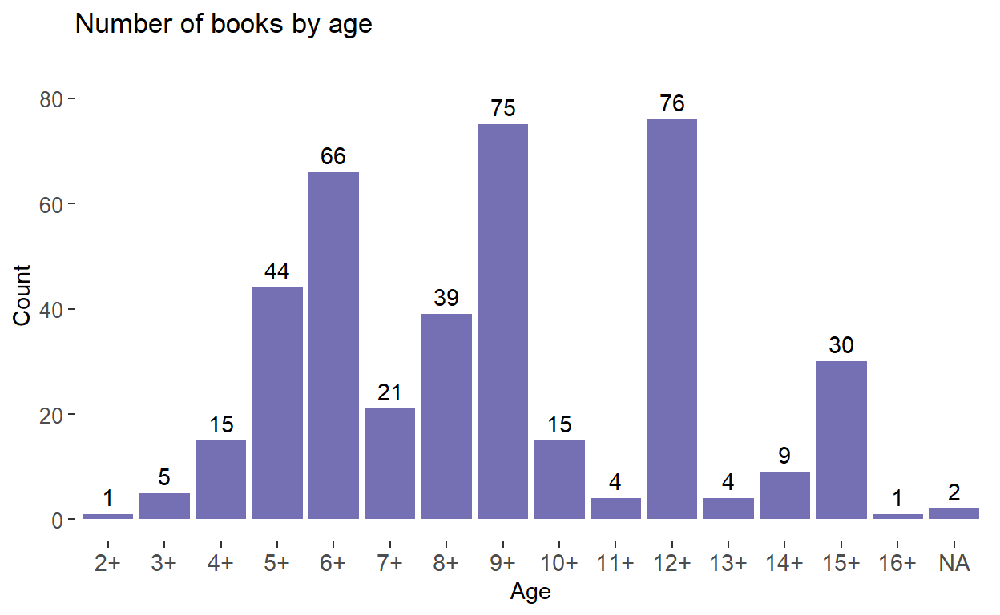
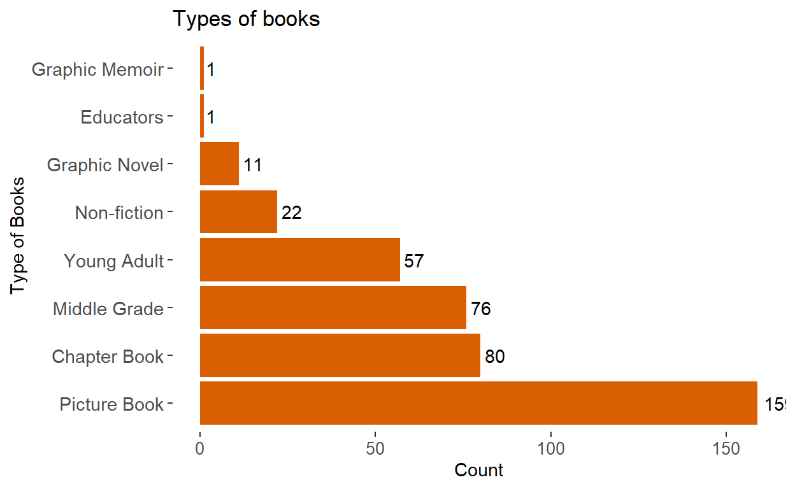
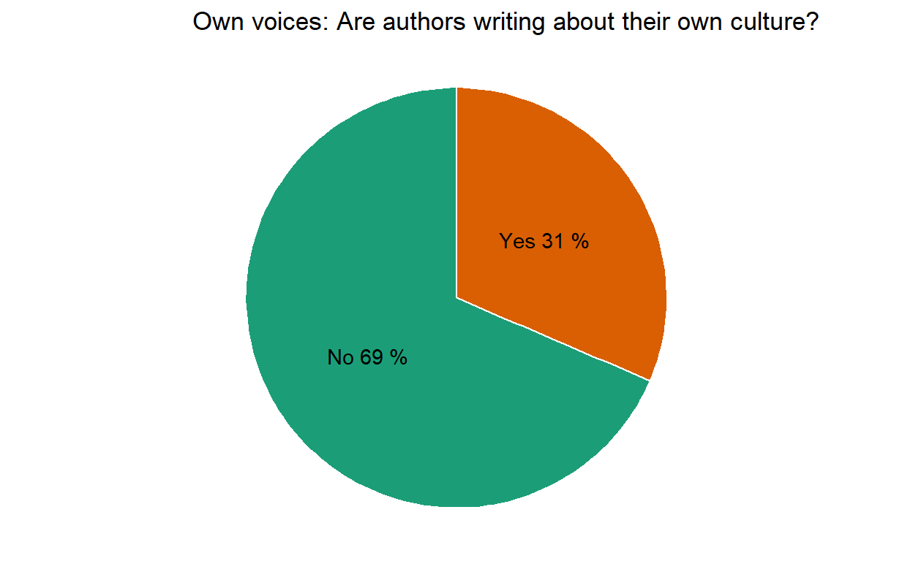

Exploring a collection of 500+ children and young adult literature featuring New Arrivals and New Americans
This was my final project submission for S022: Introduction to Statistical Computing and Data Science in Education taught at the Harvard Graduate School of Education. The original output was an interactive Shiny dashboard. Pieces of the project are recreated here. Co-created with Stella T., (MPA in International Development).
I’m Your Neighbor Books is a database of children and young adult literature which have refugee or immigrant themes. The focus of these books are “new arrivals” or groups of people who have immigrated (mainly to Western countries) in the late 20th and early 21st centuries. The book database is used by the nonprofit organization the Welcoming Library, which provides schools and libraries with curated sets of books and accompanying learning materials. Learn more about I’m Your Neighbor and The Welcoming Library.
These three charts which visualize the database characteristics by age, type of book, and “own voices.” For this last characteristic, “Yes” means that the author matches the cultural identity of the character(s) represented. In the collection, about 1/3 of the authors are writing about their own culture. This is important to note as people increasingly discuss diversity in children literature and sharing authentic stories that reflect different experiences.



The interactive map below visualizes the immigrant connection depicted within the collection. This map is not able to show the direction of travel (for example, if a character comes to the United States from Afghanistan), which is why lines refer to “connections” rather than “journeys.” However, in the majority of cases, characters are leaving their country of origin to come to the United States, Canada, or Europe.
We also created a tree map to present characters’ country of origin. The visualization is interactive, so users can click on a region of the world and see the countries represented in each region, as well as the number of books set in that country. To return to the full treemap, click on the top bar with the title “Setting tree map”.
We wanted to see if there was a relationship between the number of books published and American opinions about immigration. We wondered if the number of books published about refugees or immigrants might reflect a reaction to American discourse around these new arrivals. We do see a dramatic increase of books published since 2000 and an overall increase of opinion in favor of increasing the level of immigrants to America. However, since our dataset is small, we did not feel confident performing any statistical analysis to test for a relationship. This could be a topic of qualitative research with book publishers, authors, and illustrators to understand their motivations for writing and publishing these titles with these characters.
American opinions about immigration and number of books published with immigrant/refugee characters (2000-2020)
Respondents to Gallup poll: Thinking now about immigrants – that is, people who come from other countries to live here in the United States, in your view, should immigration be kept at its present level, increased or decreased?